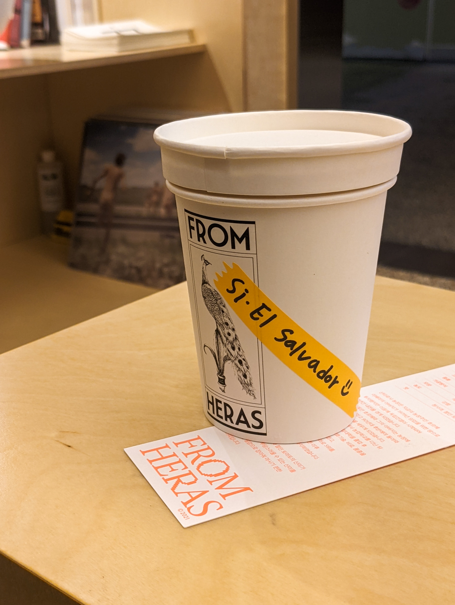

프롬헤라스
13종에 달하는 원두를 취향대로

원두 편집샵을 표방하는 프롬헤라스에서는 원두의 특징을 '도'부터 '시'까지의 음계로 표현한다.
도는 가장 어두운 맛을 가지고 있으며, 시에 가까워질수록 가볍고 다양한 맛이 난다.
여러 원두 중 가장 산미가 강한 '엘살바도르 산타 로사 파카마라'를 골랐다. 가공 방식은 워시드. 일전에 접했던 엘 아마톤 파카마라는 세미 워시드 가공에, 달달한 끝맛이 인상적이었다.
같은 나라에서 같은 품종을 키운 덕분인지 산타 로사 농장의 것도 거의 비슷한 느낌을 받을 수 있었다. 컵노트에 명시되어 있던 청사과나 절인 토마토의 산미는 다소 체감하기 어려웠지만, 워시드답게 깔끔한 단맛으로 긴 여운을 남겼다.
작은 매장에 워낙에 여러 종류의 원두를 취급하는 터라 원활한 매장 운영을 위해 자동 드립 기구를 사용하고 있었다. 만약 사람 손으로 직접 커피를 내렸다면 더 다양한 맛이 표현될 수 있었겠다는 아쉬움이 남는다.
하지만 동시에 이런 스페셜티 커피를 만원 아래의 가격에 접할 수 있다는 점에서 납득이 되었고, 원두 소량 판매와 드립백 판매도 이루어지고 있으니 아쉬운 부분은 홈카페에서 충분히 해결 할 수 있으리라 생각한다.
여러 원두 중 가장 산미가 강한 '엘살바도르 산타 로사 파카마라'를 골랐다. 가공 방식은 워시드. 일전에 접했던 엘 아마톤 파카마라는 세미 워시드 가공에, 달달한 끝맛이 인상적이었다.
같은 나라에서 같은 품종을 키운 덕분인지 산타 로사 농장의 것도 거의 비슷한 느낌을 받을 수 있었다. 컵노트에 명시되어 있던 청사과나 절인 토마토의 산미는 다소 체감하기 어려웠지만, 워시드답게 깔끔한 단맛으로 긴 여운을 남겼다.
작은 매장에 워낙에 여러 종류의 원두를 취급하는 터라 원활한 매장 운영을 위해 자동 드립 기구를 사용하고 있었다. 만약 사람 손으로 직접 커피를 내렸다면 더 다양한 맛이 표현될 수 있었겠다는 아쉬움이 남는다.
하지만 동시에 이런 스페셜티 커피를 만원 아래의 가격에 접할 수 있다는 점에서 납득이 되었고, 원두 소량 판매와 드립백 판매도 이루어지고 있으니 아쉬운 부분은 홈카페에서 충분히 해결 할 수 있으리라 생각한다.